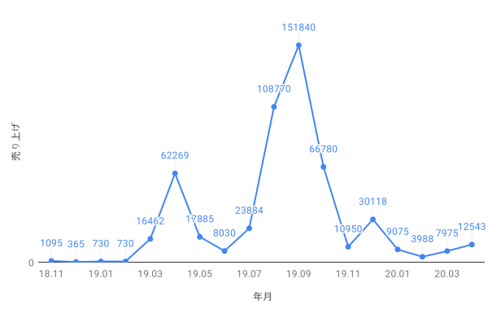

経緯
ココナラは得意（スキル・知識・経験）を売買するサービスです。恋愛相談や占い、キャッチコピー・ロゴ・イラスト作成、語学レッスンなど幅広いジャンルの「得意」を売買できます。
僕もいくつかのサービスを出品していました。例えば、Webページの制作や修正をしますよとか、独学法教えますよとか、電話でレクチャーしますよとか。
僕がココナラを始めた目的は実績を積むことでした。最終目標はココナラなどのサービスを介さずに直接取引をすることです。そのためには、実績を積み、スキルを証明することが重要ではないかと考えました。
当時はスキルも知識もまだまだ未熟であると自覚しており、いきなり直接取引をするのは気が引けました。クラウドソーシングサービスなら依頼をされやすく、僕も気楽に取引ができるので、とりあえずはクラウドソーシングサービスで実績を積み、それをネタに直接取引をこぎつけようと計画しました。
色々なサービスに登録したもののココナラでしか依頼はされず、途中からココナラ1本でやっていくことにしました。
下のグラフは僕がココナラを使い始めた2018年11月から2020年4月までのココナラの売り上げの推移を表しています。これまでに約100件の依頼に応えてきました。総売り上げは533,489円でした。
※Twitterにも売り上げの推移のグラフ画像を投稿していますが、この記事で載せた画像が正確な推移です。
ココナラでは購入者の満足度をココナラ独自の基準で評価して出品者にランクを与えます。ただの自慢ですが、僕は最高ランクのプラチナを獲得したこともあります。
依頼が増えるにつれて気になることが1つ出てきました。手数料です。
僕はほとんどのサービスを5万円以内で提供していたので、販売額の25%（税別）の手数料を運営に支払っていました。10,000円で販売したとしたら、10,000 × 0.25 × 1.1 = 2,750円を手数料として運営に払い、7,250円は僕の売り上げとなります。
試しに計算してみたところ、手数料としてこれまでに197,878円を支払っていました。
「25%も手数料とられてもったいないな。そろそろ直接取引したいな。」
こう考え出したのが2019年の後半ごろです。このあたりからココナラでの活動を控えめにして、直接取引をするための体制作りに力をいれていきました。
2020年の4月中盤、ある方（以下「Aさん」）からココナラでコーディングのレクチャーを依頼されました。レクチャーの内容について話している中でAさんはふとこんなことを言いました。
「旦那さんがこのサイト（ココナラ）をあまり良く思ってなく、旦那さんが家に居る時だと通信は難しいです。それでも教えてもらうことはできますか？？」
「おい、これ、直接取引の提案したら受け入れてもらえるかもしれねーぞ」
悪魔のささやきが聞こえました。
しかしココナラでは、外部連絡先（HPリンク、SNS垢など）をプロフページに載せたり、依頼主さんに送ったりすることが禁止されています。また、ココナラ内で知り合った依頼主さんにココナラを介さない取引を持ち掛けるのも禁止されています（ココナラのルール参照）。
僕は以前にこのルールに抵触してしまい、一時的に利用制限を課されたことがあります。運営から、次禁止行為行ったら予告なく無期限の利用制限を行うと忠告され、それに同意したことで利用制限を解除していただきました。
もう気づいたかもしれませんが、そうなんです。Aさんに直接取引をもちかけたのがバレて、無期限利用停止措置をくらったんです。
僕と依頼主さんとのやり取りの内容を運営が確認できることは知っていました。なので、直接取引の提案を馬鹿正直にテキストで送ったら当然バレます。そこで、PDFにその旨をまとめて、「レクチャーに関して添付の資料を確認していただきたい」という内容のメッセージと共にPDFファイルを送信しました。「添付ファイルはどうせ見ないだろう」とたかをくくったんです。そしたらまんまとバレました。浅はかでしたね。
という経緯でココナラを今後一切使えなくなりました。ココナラからは僕に依頼できませんのでご注意ください。
学んだこと
ズルがバレたら信用を失う
「信用」とは、証拠はないけどこの人なら大丈夫だろうという思い込みのことです。
ズルしたことが知られてしまうと「こいつまたズルするんじゃないか...？」と疑われて、信用を失うかもしれません。ある人の信用度は、その人に関するあらゆる意思決定に関与してきます。信用を失うことは機会の損失に繋がります。
当然バレなきゃ信用を失うことはないのですが、この先ずっと誰にもバレない保証はありません。ましてや、バレるのが遅くなるほど失う信用の大きさも大きくなるものです。
ズルをしないのが最善手でしょう。
重要な選択では思い込みを捨てる
思い込みとは、根拠がないにもかかわらず「そうにちがいない」と考えてしまうことです。
根拠がない以上、思い込みは間違っているかもしれません。思い込みに基づいて結論を出すことはいわば、不安定な台座の上に皿を置くようなものです。皿が自分にとって大切なものであればあるほど台座の欠陥や耐久性について吟味するでしょう。
同様に、何か重要な選択をする場合は正確な根拠に基づいて論理だてて考えていく必要があります。瓦解を防ぐためにも思い込みを捨てることが重要です。
フィードバック
ご意見やお聞きしたいことがございましたら、TwitterのDMかメールにご連絡ください。